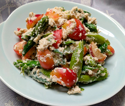

サクランボの白和え
- 調理時間： 40分
- （一人当たり）
- カロリー：211kcal
- たんぱく質：10.5g
- 脂質：11.5g
- 炭水化物：20.0g
- 塩分：0.9g


＜2人分＞
- サクランボ
- 80g
- オクラ
- 4本
- モロッコインゲン
- 60g
- グリーンアスパラ
- 60g
- ・木綿豆腐
- 150g
- ・白ごま
- 大さじ2
- ・砂糖
- 小さじ2
- ・塩
- 小さじ1/3
- ・しょうゆ
- 数滴
和え衣


- 豆腐は下茹でして、キッチンペーパーなどに包み、重しをのせて水切りする。
- サクランボは種をとる（大きければ半分に切る）。
塩水にくぐらせ、キッチンペーパーで水気を拭いておく。 - グリーンアスパラ、モロッコインゲン、オクラは各々、サッと湯がき、冷水でアク抜きをした後、斜め切りにする。
- ③は、ボウルにいれて、醤油（分量外）をひと回しして下味をつける。
- すり鉢に白ごまをいれてしっかりすりつぶす。
①の豆腐、砂糖、塩を加えてすり混ぜる。
仕上げに香りづけの醤油を数滴加える。 - ④の下準備した材料とサクランボを⑤の和え衣を和える。（食べる直前のほうが水がでない）
サクランボの白和え
サクランボは桜の木に実をつけるのでしょうか？ 春に花咲く桜にも実がなることがありますが、小さな実で美味しいものとは言えません。サクランボがなるのは、同じ桜でも「桜桃」「ミザクラ」と呼ばれる品種で、観賞用の桜とは別物です。ご存知の通り、有名な産地は山形県。山形は月山や蔵王山の高い山に囲まれた盆地が多いため、梅雨の雨が少なく、台風の強い風が少ないことから、サクランボの栽培や品種改良に成功しました。赤い宝石といわれるサクランボ。旬の名残を楽しみましょう。